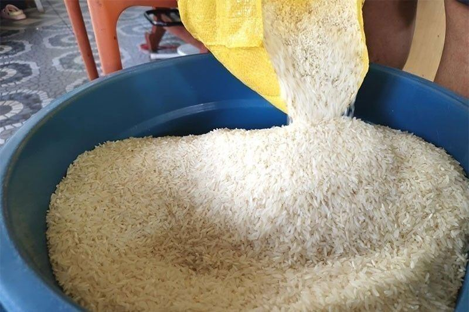
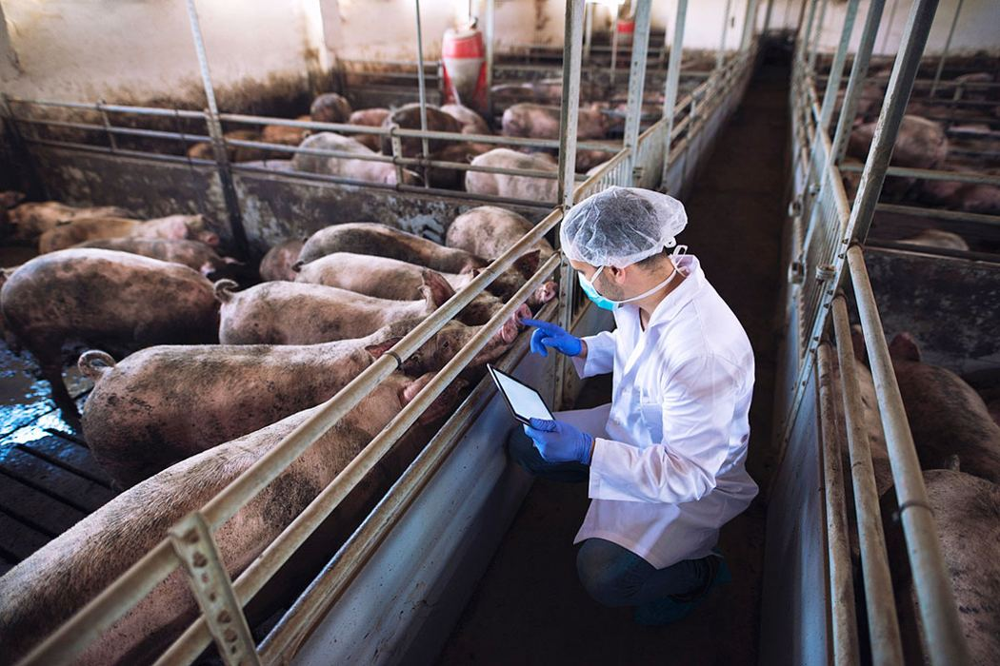

Tape
Robina delisted RRHI and still runs it like a public company — independent directors stay. Marcos put P69.9B on three 2027 rice lines (NRP, RCEF, Rice for All). BAI cleared Vietnam’s AVAC ASF LIVE for sale; Korea’s PROVAC is still in testing. SRA may skip the US sugar quota again after floods and scale. ALI folds Urban and Regional Estates under Urquijo on 1 Jan 2027 — Nuvali is in the 53.
For Calamba: rice budget is a 2027 farm story, not a September invoice cut — keep the Q1 lock. Pork: vaccine is real, free backyard shot is not yet. Sugar: industrial buyers get tighter, not cheaper. South catchment: one ALI estates boss means Nuvali / Broadfield / Southmont move as one pipeline — watch leasing pace, not the org chart.
RRHI private: still run like listed
3 Sep 2026
Robinsons Retail Holdings Inc. ended nearly 13 years on the PSE; shares delisted Aug 31 after JE Holdings’ tender offer dropped the public float below the minimum. Chairman Robina Gokongwei-Pe: she will miss the ticker, not “explaining to 23-year-old analysts.” She is keeping independent directors “so that they keep us on our toes,” and says whether listed or private they still run it like listed. President and CEO Stanley Co: less investor-relations time is “the only difference” — “it’s not because we’re already private that we’ll forget about discipline.” Portfolio still spans Uncle John’s, Shopwise, The Marketplace, Handyman, True Value, Daiso Japan, TGP, Southstar Drug, Rose Pharmacy, Toys “R” Us, plus Robinsons Supermarket, Easymart and Department Store. IPO was Nov 11, 2013 (P28.12B). For a competitor or supplier: same chain, quieter IR, watch store and format bets, not the stock.
Open Philstar

P69.9B on three rice lines for 2027
3 Sep 2026
President Marcos is proposing P69.9 billion for three major rice programs under the 2027 National Expenditure Program: P29.9B National Rice Program (seeds, inputs, extension, tech), P30B Rice Competitiveness Enhancement Fund (RCEF — extended to 2031 under RA 12078, annual funding tripled from P10B, sourced from rice-import tariffs), and P10B Rice for All via Kadiwa and accredited outlets. Inside RCEF: P9B farm machinery (PhilMech), P6B seed work (PhilRice), plus training, credit, composting, irrigation, pest management. Acting Budget Secretary Kim Robert de Leon framed it as produce more at home, strengthen farmers, keep rice accessible. Broader agri proposal: P261.7B. For a kitchen: this is next year’s farm budget, not a September price cut. Yesterday’s import buffer still sets the near-term quote.
Open Philstar

First commercial ASF vaccine cleared
3 Sep 2026
BAI approved commercial sale of AVAC ASF LIVE (AVAC Vietnam) — live, attenuated, gene-deleted, freeze-dried — the first African swine fever vaccine cleared here. Agriculture Secretary Francisco Tiu Laurel Jr.: another tool for hog repopulation and a more stable pork supply. Undersecretary Constante Palabrica: Korea’s PROVAC is still in testing; he asked Laurel for P1B next year to subsidize vaccination including backyard farms. Samahang Industriya ng Agrikultura’s Jayson Cainglet called it long overdue and wants free or heavily subsidized shots plus biosecurity. Laurel said DA will work with BAI on reasonable pricing. Operator read: local pork recovery just got a tool; the invoice does not flip until backyard coverage and repopulation actually move.
Open BusinessWorld
PH may skip US sugar quota again
3 Sep 2026
Sugar Regulatory Administration administrator Pablo Luis Azcona: local production may be too thin to fill the US export quota this year after last year’s floods on cane areas, red-striped soft scale infestation, and a looming El Niño dry spell. “I’m not really sure whether we will export and to what amount as of now.” USTR kept the PH quota at 145,235 MT raw value for the market year starting Oct 1, 2026. PH already skipped 2021–22 and 2022–23; last crop year shipped about 99,000 MT (2025: 66,085 MT; prior: 24,179 MT). Decision once milling starts around Oct 1. UNIFED warns incoming production may fall short of local and industrial demand. For F&B: export skip means domestic industrial buyers compete harder for a smaller crop — price risk up, not a windfall.
Open Philstar
ALI folds estates under Urquijo
3 Sep 2026
Ayala Land will integrate Urban Estates and Regional Estates into the AyalaLand Estates Group effective Jan 1, 2027, under Jaime Z. Urquijo (currently SVP and head of Urban Estates, seconded from Ayala Corp. in April after serving as AC chief sustainability and risk officer). Christopher B. Maglanoc, SVP and Regional Estates head, retires Dec 31. ALI: strengthen long-term growth and organizational effectiveness. Estates cover large mixed-use communities — residential, retail, office, hotel — across 53 sites including Makati CBD, BGC, Cebu Park District, and Nuvali. Shares closed P14.74 (−1.86%). For Calamba / Sta. Rosa: Nuvali is named in the same book as Metro Manila — one boss for the South pipeline means leasing and phasing should get clearer, not slower.
Open BusinessWorld